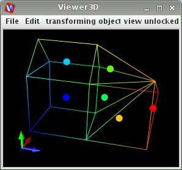

CELL CENTERS
The module replaces each cell by its center.
Input data
The input field is irregular.
Output data
The output field is irregular 3-space. A 3D geometry object of the field.
Presentation parameters
Presentation tab contents are described in the common interfaces section unter the Presentation Panel entry.
Example
Choose test cells module from the test objects library and cell centers module from the general mappers and accessories library and connect them. In the test cells module GUI choose line representation instead of surface, in the cell centers module GUI increase point width.
